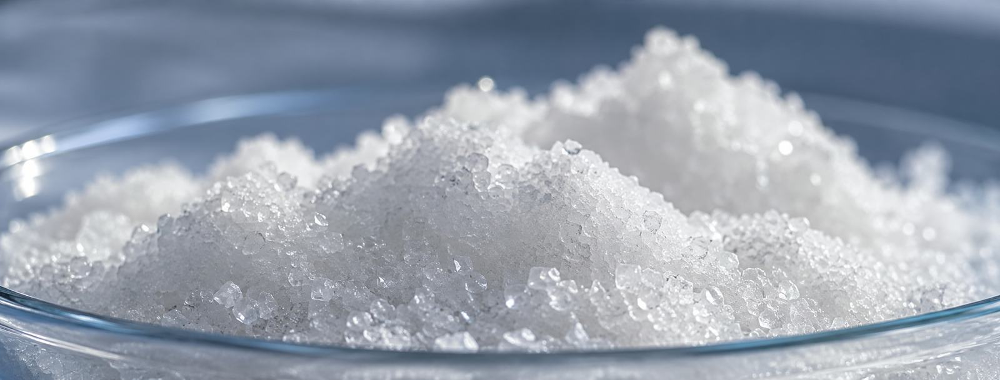

One acid source. Six series. Twenty-plus grades.
Every product starts from the same thermal-process phosphoric acid — the purity story carries through the whole line. From agricultural fertigation to electronic-grade chip cleaning.
MKP 0-52-34 · Monopotassium phosphate
Greenhouse-grade, fully water-soluble. The product this site is built around.
| Parameter | Spec |
|---|---|
| Assay (KH₂PO₄) | ≥ 99.0 % |
| P₂O₅ / K₂O | 52.3 / 34.2 % |
| Water insolubles | 0.07 % typical |
| Chloride | 0.0014 % typical |

DKP · Dipotassium hydrogen phosphate
| Parameter | Spec |
|---|---|
| Assay (K₂HPO₄) | ≥ 98.0 % |
| Grade | Industrial / fertilizer / food |
| Form | White crystal powder |
Eight application fields
Why DKP from the same plant matters
Same thermal acid, same QC lab, same logistics. If you're already buying MKP, adding DKP to the same container means one supplier, one COA system, one relationship — and your A/B tank is fully sourced from one chain of custody.
Urea Phosphate · UP 17-44-0
| Parameter | Spec |
|---|---|
| N content | ≥ 17.0 % |
| P₂O₅ | ≥ 44.0 % |
| pH reaction | Strongly acidic |
Key uses
Acidifying N-P source for fertigation — keeps drip lines and emitters clean by lowering solution pH. Used in high-carbonate water situations and as a line-cleaning agent between nutrient cycles. Pairs with MKP and potassium sulfate for complete fertigation programs.
Request UP spec sheet →Container mix opportunity
MKP + UP in one container covers both the P-K base and the acidifying N-P component of a fertigation program. One shipment, one supplier, two core inputs sorted.
Thermal phosphoric acid · H₃PO₄
The clean acid behind the entire range — and the reason the salts perform. Available to formulators at three purity tiers.
Beverage & process acid
Acidulant for beverages and solid drinks. Sugar refining clarifier. Yeast nutrient. Flour improver. The entry tier where food safety certification (QS) applies.
Agriculture to metallurgy
Fertilizer feedstock, pharmaceutical intermediate, dyeing agent, metallurgical flux, coating raw material, rubber coagulant — the workhorse grade across six industries.
"The crown jewel"
Ultra-high purity for semiconductor wafer cleaning, PCB etching, and electroplating. The fact that this line exists tells you where the quality ceiling sits — your fertigation grade comes from the same campus.
TSP & DSP — the industrial range
Trisodium phosphate and disodium hydrogen phosphate round out the product family — same plant, same acid, different salt.
TSP · Trisodium phosphate
DSP · Disodium hydrogen phosphate
Need specs on any product? One email.
Tell us which products and grades — we send spec sheets, pricing and sample availability the same day.